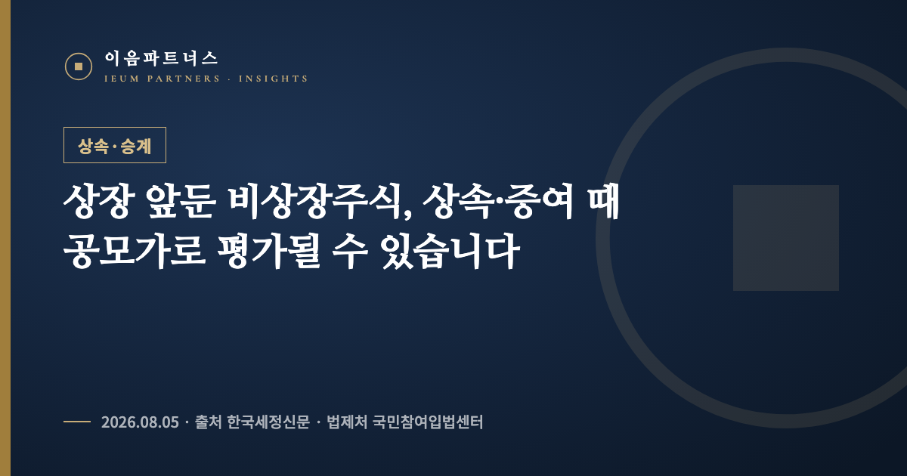

상장 앞둔 비상장주식, 상속·증여 때 공모가로 평가될 수 있습니다

회사가 상장을 준비하고 있다면 대표님 지분의 가치도 곧 크게 달라질 수 있습니다. 그래서 상장 전에 자녀에게 주식을 넘기는 방안을 생각하는 분들이 있는데, 이때 주식을 얼마로 평가하느냐가 세금을 좌우합니다. 이 글에서는 2026년 세제개편안에 담긴 상장 추진 비상장주식의 평가 방법 변경을 정리합니다.
개편안은 국회를 통과하면 2027년 1월 1일 이후 상속이 시작되거나 증여받는 분부터 적용됩니다(한국세정신문). 특히 해외 상장을 준비하는 회사라면 증여 시점과 평가 방법을 미리 따져 볼 필요가 있습니다. 우리 회사 주식 가치가 궁금하시다면 카카오톡 채널 이음파트너스에서 함께 살펴볼 수 있습니다.
주식은 지금 어떻게 평가하나
상속세와 증여세를 매길 때 상장주식은 평가기준일(상속·증여일) 앞뒤 2개월 종가의 평균으로 평가합니다. 시장 가격이 없는 비상장주식은 보충적 평가방법(시가가 없을 때 세법이 정한 산식으로 값을 매기는 방법)을 씁니다. 1주당 순손익가치(이익 기준 가치)에 3을, 1주당 순자산가치(재산 기준 가치)에 2를 곱해 더한 뒤 5로 나누는 방식입니다.
국내 상장을 추진 중인 비상장주식은 이미 공모가격(상장 때 투자자에게 파는 가격)과 보충적 평가액 가운데 큰 금액으로 평가하고 있습니다. 곧 시장 가격이 생기는 주식인 만큼 공모가격을 함께 보는 것으로 이해할 수 있습니다.
무엇이 바뀌나
| 구분 | 내용 |
|---|---|
| 상장주식 | 평가기준일 전후 2개월 종가 평균(변동 없음) |
| 비상장주식 | (순손익가치 × 3 + 순자산가치 × 2) ÷ 5(변동 없음) |
| 국내 상장 추진 비상장주식 | 공모가격과 보충적 평가액 중 큰 금액(현행 유지) |
| 해외 상장 추진 비상장주식 | 새로 '공모가격과 보충적 평가액 중 큰 금액' 적용 |
| 적용 시기 | 2027년 1월 1일 이후 상속·증여분(국회 통과 시) |
정부 개정안은 해외 상장 추진 주식의 평가 방법을 “국내 상장을 추진 중인 비상장주식과의 형평성 확보를 위하여” 국내 상장 추진 주식에 준해 정한다고 설명합니다(법제처 국민참여입법센터). 국내 상장이든 해외 상장이든 같은 기준으로 평가하겠다는 뜻입니다. 이 개정안은 2026년 9월 3일 국회에 제출돼 심사를 받고 있습니다.
우리 회사에는 어떤 영향이 있을까
회사의 이익과 순자산에 비해 공모가격이 높게 정해질수록 보충적 평가액과의 차이는 커집니다. 해외 상장을 준비하는 회사가 상장 전에 주식을 증여하면, 개정 뒤에는 공모가격을 기준으로 증여세가 계산될 수 있습니다.
그렇다고 개정 전에 서둘러 증여하는 것이 늘 유리하다고 단정하기는 어렵습니다. 증여 시점을 정할 때는 평가 방법 외에도 따져 볼 세법 규정이 여럿 있으므로, 세무 전문가와 함께 전체 세 부담을 비교해 보시길 권합니다.
대표님이 지금 확인할 것
- 국내·해외 상장 계획과 예상 일정
- 현재 기준 보충적 평가액이 얼마인지 미리 계산해 두기
- 자녀 증여 계획이 있다면 2027년 전후 적용 규정 비교
- 국회 심사 결과와 시행령에서 정할 세부 기준 확인
참고한 자료
- Ⅴ. 기타-양도소득세 및 상속·증여세(2026년 세제개편안) — 한국세정신문 (2026.08.05)
- 상속세 및 증여세법 일부개정법률안(정부, 제2221045호) — 법제처 국민참여입법센터 (2026.09.03)
상장을 앞둔 회사의 지분 이전은 시점에 따라 세금이 크게 달라질 수 있습니다. 궁금한 점은 카카오톡 채널 이음파트너스로 문의해 주세요.
※ 이 글은 일반적인 정보 제공을 위한 것으로, 개별 사안은 세무사·노무사 등 전문가와 함께 확인하시기 바랍니다.